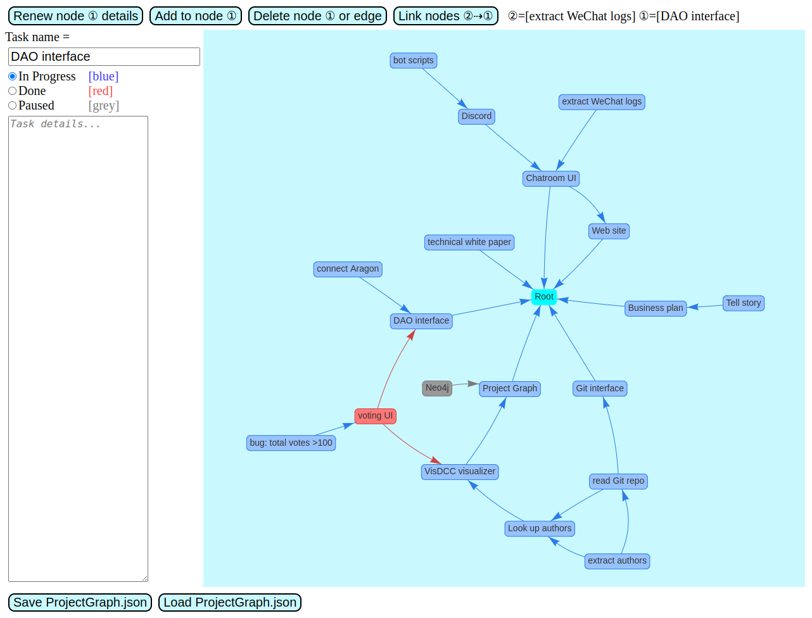
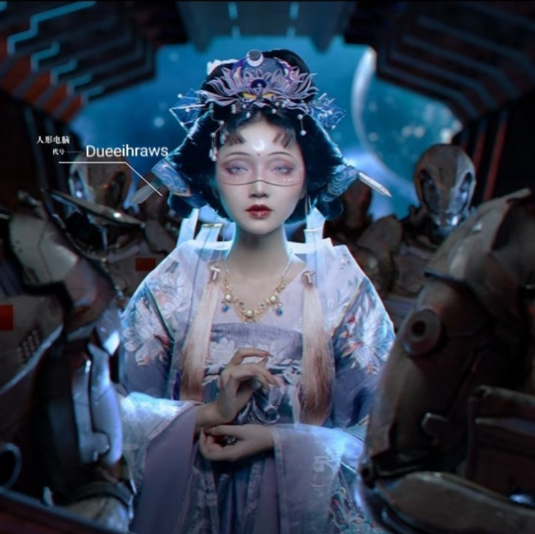
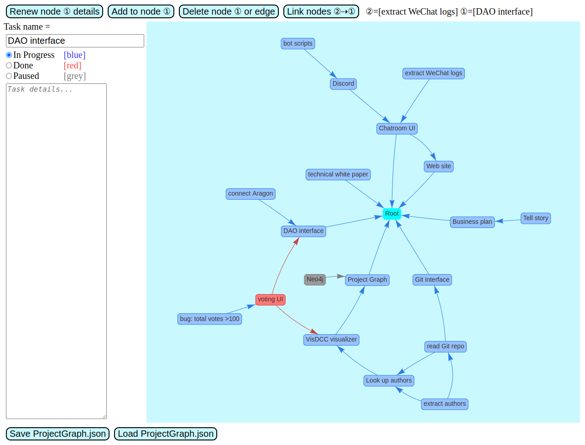
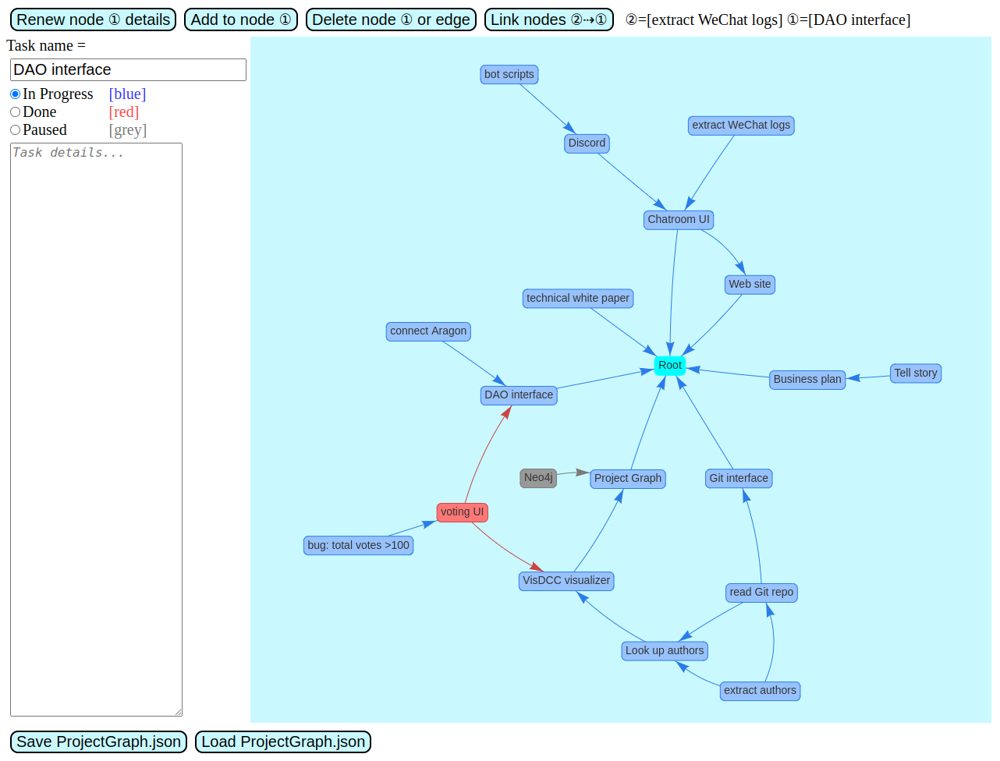

Snow-Crossing is a de-centralized project collaboration platform, which allows a group of people to work on a project autonomously and without rigid hierarchies. A special feature is the use of weighted-voting to calculate and distribute profits to each member.
Crossing the Snow is a children's story written by the well-loved Japanese writer Kenji Miyazawa in 1921. A little brother and sister met a fox in the snow field, who offered them a corn cake to eat. "Is the saying that foxes are liars not true?" The fox said it is just a rumor. They agreed to come to a dinner party organized by foxes and watch the slideshows "Do not drink wine", "Be careful of traps" and "Be careful of fires". The brother and sister went as promised, and they enjoyed corn cakes and rice cakes and slideshows. The fox dressed in a Tuxedo suit gave a speech, saying that foxes will from now on use their actions to prove that human conceptions of them were wrong. After the part they happily bid each other farewell.
我们的《渡过雪原》宗旨是让全世界人类不分种族、建立无国界公司合作。
The purpose of our Snow-Crossing platform is to allow people from all over the world to collaborate without racial bias, to build borderless companies.
The Project Graph lets members see conveniently which tasks have been completed and which tasks remain to be done. It allows a complex problem to be decomposed into more and more simpler parts:

Git UI 可以方便查看每一个工序的成员贡献，甚至新加入者也可以快速了解项目的进程：
The Git user interface lets members to browse the Git repository of contributions that other members have made, so even new members can get a quick glimpse of the project's progress:
投票界面 自动将总数调整至 100%：
The Voting UI automatically adjusts the total to 100%:
Claris
0
Abeer
0
Pete
0
Eric
0
YKY
0
Roger
0
Total
0
用户痛点
Pain Points
自从 二战以来，美国成为世界霸权，高科技企业主要被 Anglo-American 公司垄断。
Since World War II, USA established their global hegemony, high tech has been dominated by Anglo-American companies.
USA is the world's most advanced country, but at the same time it is also a racist and regressive country. The better educated and open-minded individuals in America support racial equality, but in reality the global economy under US dominance still has institutionalized racial bias. Top AI companies such as Google, DeepMind, OpenAI, are all Anglo-American-based, they don't have racial equality writ into their companies' "constitution", but instead they only try to protect employees from racism under the power structure of the status quo.
（我的一个印度朋友告诉我）科技界流行的 Conway's Law 说： 一个组织 设计的 系统，会复制 该组织的通讯结构 (Any organization that designs a system will produce a design whose structure is a copy of the organization's communication structure.) 换句话说，只有先进的组织才可以生产先进的技术，落后的组织方式生产落后的技术。
Our partner Aswin once told me about Conway's Law, which says that "Any organization that designs a system will produce a design whose structure is a copy of the organization's communication structure." In other words: advanced modes of organization produce advanced technology, old-fashioned organization produces regressive technologies.
Take strong AI as an example. I know quite a few Asian researchers who are passionate about AGI but who eventually bowed to reality and gave up on AGI, because Asian countries could not nurture a healthy academic and commercial ecosystem for high tech. The Asian environment is "involutive", with resources concentrating in few hands, causing creativity to be stifled, and scientic progress stalled. Many Asians often blame their country is backwards, but they are often themselves the spreader of backwardness.
Even in the world at large, many countries that we don't think as backwards, such as Europe, Japan, Russia, ... also fail to create cutting-edge tech companies such as in the field of AI.
Hong Kong as a global financial hub, also regarded as a "window" from which China looks towards the world, may be a suitable place to build the future generation of borderless companies, providing an route for the advancement of Chinese science and tech.
Snow-Crossing can be used to develop any high techproduct, including tech-related artwork (eg: animes, games, literary works, metaverse, ...) and social cooperatives such as involving agriculture, medicine, poverty, elderly, education, children, etc.)
You may wonder, why should art be involved with such advanced technologies? Since the time Andy Warhol used the photocopier to make "paintings" of Marilyn Monroe, technology has become part of art. In the post-modern age, the line between "author" and "audience" has blurred. When we play computer games, we are also setting the development of the game story. Whether willing or unwilling, we are already authors and participants of the Squid Game or Hunter Games.
发展人工智能
As Development Tool for AI
《渡过雪原》可以用来发展复杂的人工智能系统.....
Snow-Crossing can be used to develop AGI systems because of its ability to handle complex cooperation among humans.....
竞争者
Competition
简单介绍 竞争者.....
Brief introduction of competitors.....
强调《渡过雪原》的特点是 clusters 的组织形式，与及 奖励分配的计算方法。
Special features of Snow-Crossing: clusters organization, and the calculation of reward distribution.
商业模式
Business Model
类似 KickStarter 的合作平台
A platform for collaborative projects similar to KickStarter
We're still at the prototype stage, but we're already using Snow-Crossing as a tool to develop Snow-Crossing itself (bootstrapping).
团队
Our Team
This is Alvin (路立安), a highly adaptive and result-oriented person with a growth mindset and problem-solving skills, have more than 10 years of business and partnership development experience in various fast-paced environments and startup teams, always focusing on strategically growing the business and building better teamwork for the company, and well experienced in
Business, Partnership, Channel, and Affiliate Development
Consultative Selling and Sales Management
Go-To-Market Strategy Planning
From 0 to 1, build projects from scratch
I never get tired of learning cutting-edge technology and new stuff like web3, metaverse, blockchain, AI, and ESG, people in these industries focus on growing the whole industry and providing a better living standard for mankind.
LinkedIn profile: https://www.linkedin.com/in/alvin-lu-lap-on/
Sherry (黄晨雪)
7年资深 产品/顾问 经验
前 TCL产品、OPPO 体验增长顾问
知乎、PMCAFF 专栏作者
《区块链前世今生》插画架构师
Sherry Huang
7 years' experience as product manager / consultant
Former TCL product manager, OPPO user-experience consultant
Zhihu.com (知乎), PMCAFF blog author
Blockchains — Past and Future illustrated book author
YKY (甄景贤), independent AGI researcher from Hong Kong. I want to live forever, which is why I devote my life to researching strong AI and to advocate for the movement known as Transhumanism. I am also a strong advocate for racial equality and global egalitarianism. I have dreamed of distributive organizations since the 1990's, at a time when BitCoin had not been born yet. I remember reading the e-mails of Wei Dai (戴唯), the creator of B-Money, a precursor of BitCoin. I saw the beginning of Aragon, when they had only a white paper, and I wondered whether it will ever be developed to be usable for a real company. There were many missing elements (such as the cluster structure, block chains, for-profit open-source software licenses, etc), but gradually they became available or the solution ideas occurred to me. I think we are witnessing a dramatic transformation of human life by new technologies and I am sick of Asian people always being the followers instead of making real contributions to high tech.
Xinfa Xie, founder and CEO of "Good Taste No Wait"
South-Eastern University Mobile Communications 国家重点 Lab, Master's degree
Former ZTE Comms Startup product manager, with 12 years of management experience
In 2013, created "Good Taste No Wait" intelligent restuarant services, solving problems of efficiency, management, marketing, budgeting, and customer experience.
In September 2016, recieved "50 Business Innovators of China" Award
Now turned towards his passion in AGI
Penrose, a sophomore majoring in Automation, specifically Artificial Intelligence direction, in Tsinghua University.
My research interest lies in Reinforcement Learning, Theoretic Computer Science and Operation Research.
I hold a firm belief that AGI will come into existence, and will profoundly change people's lives.

Dueeihraws, a strong advocate for racial equality and global egalitarianism, Product Lead from China
7+ years' experience in product management, having launched multiple products from scratch
Experience building solutions addressing content quality or authenticity
Experience working side-by-side with engineers, data scientists, designers, sales and operations
Experience synthesizing data both quantitative and qualitative to inform product decisions
Outstanding interpersonal skills communicating both in person and in writing
Public presentation experience a plus
Experience cultivating team culture that proves both positive and durable
Ability to influence without authority
Intellectual humility, honesty and curiosity
发展规划
Development Plan
《渡过雪原》本身是用来开发《渡过雪原》的工具，.....
Snow-Crossing is used to develop itself, which gives us more opportunities to test-drive it.....
融资
Financing
众筹
The use of crypto-currency tokens allows more flexibilty and convenience to get funding, including crowd-funding....

 
